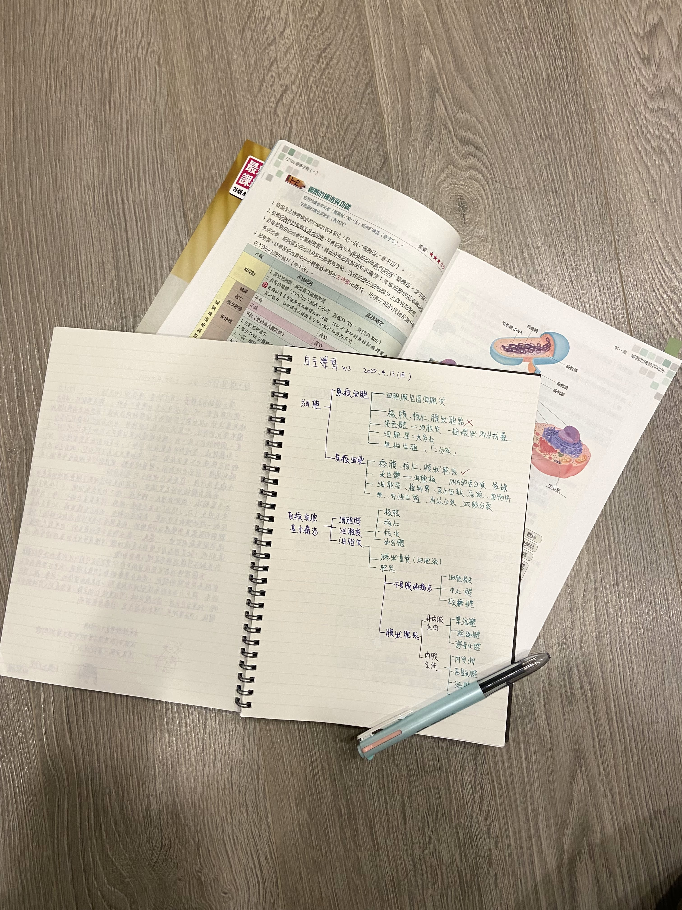

學習
我是個華德福學生
我從幼兒園就讀華德福校，一直到現在高中
華德福教育是由奧地利人魯道夫•施泰納博士所提出，他深入傳統智慧，加上個人的靈性修持，以適合當代人理解和操練的方式，提出了人智學。 依其理念開創華德福教育、生機互動農法、人智醫學、優律司美等實務及藝術性工作。
在這裡我們接觸很多藝術方面的課程，像是美術、木工、泥塑、手工、金工等等，也有許多特別的課程。到了高年級我們花更多的時間在認識自己，不管是興趣、個性、未來方向⋯⋯成爲一個創造自己人生的人。
——從無到有 自己的課本自己寫
從小，我們的就開始寫工作本，每一堂課的內容，從一開始老師會寫板書，到高年級變成是我們要自己做筆記、整理、設計，重新產出這堂課的重點與內容。
在這個過程中，我學習找出重點，在寫工作本時，是重新整裡自己的記憶與想法，同時也能確定自己有沒有不會的地方。


高中工作本連結
自主學習
我在小學時，看到了一套科學的漫畫，裡面做了很多的實驗，讓我「想做實驗」的念頭開始萌芽。那時我還不清楚「實驗」是什麼，只是想自子動手做。一次生日，家人帶我去了化學材料店，買了幾個玻璃燒杯、燒瓶⋯⋯還有
一些小實驗的材料包。
每到假日，我和爸爸就開始在廚房亂搞，先是做天氣瓶，樟腦刺鼻的味道直接在家裡炸開，又開始養明礬結晶，導熱板放在瓦斯爐上，煮的不是水而是加了明礬的水。這些小小活動
是我對實驗的嚮往，也是我印象非常深刻的回憶。
在國中時接觸到了化學課，一次老師展示了硫酸與糖的實驗，幾滴硫酸碰到糖，過了幾秒開始冒煙、變黑、膨脹，視覺的震撼感與整個過程就像是吸住了我的眼睛。在生物課中接觸到了細胞和另一群看不見的生命，裡面藏有改變生命的能力，就像是一個新世界。
升上了高中第一次的自主學習，我選擇做一個小實驗，題目是「不同的糖對酵母菌發酵的影響」，動機是在生科營接觸到酵母菌，覺得可以延續不同的主題進行，加上小時候我就很想要自己做實驗，
所以就決定在自主學習時間，一是更了解酵母菌，二是完成我一直以來的小夢想。
在這次自主學習中我最印象深刻的是，我遇到預料之外的大問題，這讓我第一次體驗到「發現問題>提出假設>解決問題」這個過程，我覺得如果
學科學能從一個問題去切入，然後提出可能的方式實驗，這樣不只學到了「為什麼」，也可以訓練在科學知識上的連結與想像力，而且更有趣。

——平淡與重複中 我想看到我的真面目
第二學期的自主學習，我選擇從閱讀來接觸生物，我希望
自己能在生物上有個好基礎，這對我來說很重要。與第一學期很不一樣的是，我全沒有實作，就是讀、寫，在這個過程中，就很平淡，拿起書、拿起筆，在這之中，我想了解我對生物的真面目。問我喜不喜歡生物，我會說喜歡但有
多喜歡？只是「可以接受」？我希望在這個過程中能更了解這個問題。